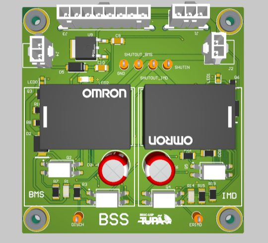

TX · EESC-USP Tupã
BSS
BMS and insulation-monitor signals connected to the shutdown circuit.
EXPLORE THE DESIGN
Interactive PCB viewer
Rotate and zoom the board in 3D, switch to PCB to inspect copper layers, or open SCH to follow the circuit.
Altium 365 viewer · The photos and schematic drawings below are also available if the viewer cannot load.

Board details
- Inputs
- BMS and IMD signals
- Logic
- HCF4013 latches and discrete gates
- Timing
- TS555 circuits
- Connections
- Shutdown, reset and panel signals
BSS schematics
4 sheetsBMS pathView sheet

IMD pathView sheet

Reset switchView sheet

ConnectorsView sheet

Altium project
TX in Altium 365T09 BSS revision
These source links may require workspace access. The schematic drawings above are saved with this portfolio.